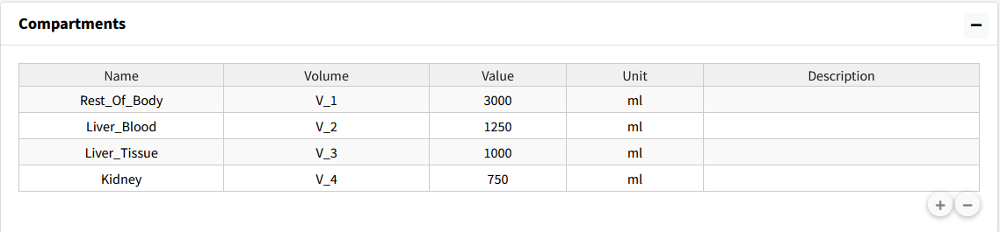

Create Compartments
We will start by setting up our four compartments in this model: Rest_Of_Body, Liver_Blood, Liver_Tissue, Kidney.
Steps:
Go to the Compartments box in the Create Model tab.
Press the “+” button three times to add three compartments.
Change the Names of the compartments in the table to Rest_Of_Body, Liver_Blood, Liver_Tissue, and Kidney.
Volume names are autogenerated with numerical numbering.
Change the volume value and units to match parameter table (these values can also be changed in the parameter table for the model).
The result should be the following table:
